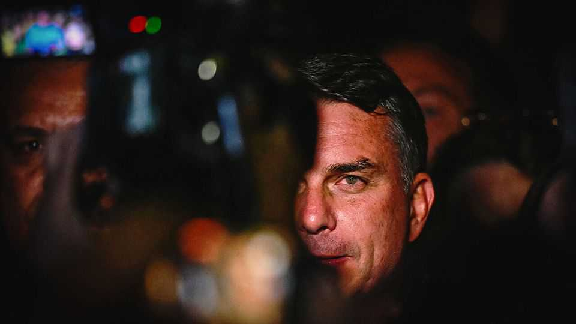
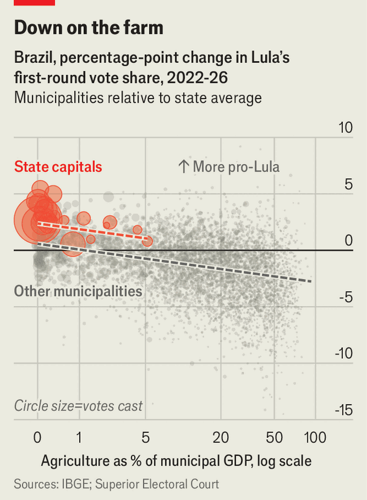
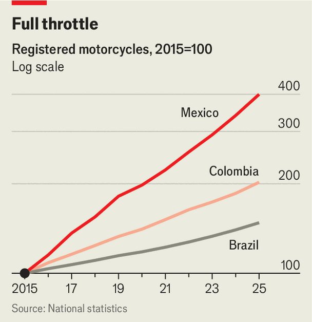

Brazil falls into MAGA’s orbit
The Bolsonaro clan and its allies have swept the country’s general election

Oct 8th 2026
THE END of an era in Brazil may also mark the moment a dynasty truly established its hold. On October 4th Brazil’s ruling left-wing Workers’ Party (PT) and its ageing leader, Luiz Inácio Lula da Silva, were trounced in the first round of the general election. Flávio Bolsonaro, the scion of a right-wing patriarch, Jair (a former president under house arrest for attempting a coup), looks set to become the leader of the world’s fourth-largest democracy in a run-off on October 25th.

The defeat was enormous. Lula, as the incumbent is known, lost votes in more than 5,400 of the country’s 5,571 municipalities compared with the last election. Within states, the losses were greatest in the countryside (see chart). The Bolsonaros’ inaptly named Liberal Party (PL) almost doubled its seat tally in the Senate and cemented its status as the largest party in the lower house. Fernando Haddad, who is sometimes touted as Lula’s heir, was beaten by a margin of 26 points in his bid to oust São Paulo’s governor, all but burying his political future.
This dominance puts Flávio in pole position to win the run-off. Since Brazil returned to democracy in 1985, no candidate who lost in the first round has gone on to win the second. Even if Flávio were to lose, the outcome is already a triumph for the Bolsonaro clan. Mr Bolsonaro’s zealous evangelical wife, his middle and youngest sons and his brother all won seats in the legislature. There are now nearly enough right-wing senators for the two-thirds majority needed to impeach Supreme Court justices who prosecuted his father.

The vote was less a reflection of enthusiasm for Flávio than a repudiation of the current government in an election marked by apathy. Over 33m of 158m eligible voters stayed away, the highest abstention rate since 1998. Polls published in the week of the ballot showed almost a third of voters did not know whom they would back. Outside a polling station in an upscale neighbourhood in Rio de Janeiro, a gloomy 24-year-old described the election as having “a funeral atmosphere”. “It’s about choosing the lesser evil,” shrugged his friend.
The PT has been in power for 18 of the past 24 years and Brazilians are tiring of Lula, who at 80 still yearns for a fourth term. A former trade-union leader from Brazil’s poor hinterlands, he has failed to connect to younger, middle-class Brazilians, who tend to prefer gig work to union jobs and dream of being entrepreneurs. Flávio took 54% of votes among lower-middle class voters, against Lula’s 37%.
Moreover, many voters do not trust the PT on the economy and are fed up over graft. Lula was jailed for corruption in 2018 though his convictions were overturned in 2021. A grubby corruption scandal involving Brazil’s biggest bank fraud also fuelled anti-establishment sentiment. Though Lula was not directly implicated, it has hurt him. A poll in mid-September found that voters were more likely to punish Lula than Flávio for the scandal.
Lula also lost the support of centrists who “felt betrayed by the PT”, says Magno Karl of Livres, a liberal think-tank in São Paulo. “They voted for Lula in 2022…thinking that the government would spend less, would listen more to other parts of society and would not demonise criticism—but it didn’t happen.” His spendthrift policies have pushed up interest rates, raising debt costs for households, businesses and the government. Despondency prevails, despite modest real gains in income and record-low unemployment.
Brazil’s rightward shift has continental implications. Since Donald Trump returned to power, all seven presidential elections in the region have been won by like-minded candidates. If Brazil, the last big holdout in South America, comes under the sway of the Donroe Doctrine, the United States could gain preferential access to the country’s vast trove of rare earths. Flávio is expected to appoint his brother, Eduardo, as either foreign minister or ambassador to Washington, given his close ties with Steve Bannon and the MAGA movement.
Even so, there will probably be some continuity in foreign policy. No MAGA-aligned leader in South America has broken relations with China, the biggest buyer of South American commodities. Brazil is unlikely to buck the trend. Though its ties to the European Union could become strained over deforestation, this is unlikely to threaten a newly minted free-trade deal between the EU and Mercosur, a Brazil-led trade bloc. The EU “needs all the economic partners it can get outside China and America,” says Sándor Nagy of Corvinus University in Budapest.
At home the consequences of a Flávio presidency would have a sharper edge. He could pursue a campaign of vengeance against his father’s perceived enemies. Among his targets may be Supreme Court justices, soldiers who resisted the coup attempt, diplomats who do not kowtow to MAGA and federal policemen who have investigated the clan.
Flávio would also be able to shape the country’s regulatory agencies and institutions for a generation, due to an unusually large number of vacancies. Up for grabs are four out of 11 seats on the Supreme Court and two spots on the board of the central bank, as well as posts at the securities regulator and antitrust watchdog.
The big beneficiary of a Flávio victory would be the economy. Stocks rallied after the results were announced, and the currency strengthened. Investors believe that Flávio and a right-wing Congress will enact a tough fiscal adjustment. Flávio has promised savings worth 1.5% of GDP over 18 months through privatisations of state-owned firms, a spending cap and slashing the government.
Yet so far, details have been thin. Flávio promises to scrap a large number of taxes, which would shrink revenues. His team has written off a reform of the pension system, the main item pushing up unsustainable spending. Congress, which is beholden to lobbies, appears unwilling to cut tax breaks, which cost 7% of GDP. Flávio’s advisers have unhelpfully ruled out delinking social benefits such as pensions from the minimum wage. As this rises inexorably each year, it drives up all other spending indexed to it.
Markets will study Flávio’s campaign, especially his pick for finance minister. Meanwhile environmentalists, judges and those who have investigated his family will look on with trepidation. ■